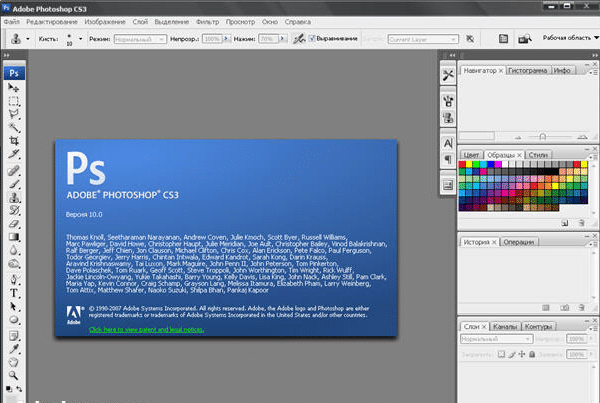

Не для кого не станет открытием, что Adobe Photoshop является давно признанным лидером в мире графических редакторов. В 2007 году компания Adobe выпустила Photoshop CS3- каковы же особенности и достоинства этой программы, пойдет речь ниже.

Изменение интерфейса, ускорение работы и прочие достоинства программы.
В сравнении с версиями, выпущенными ранее Photoshop CS3 обладает заметно лучшими показателями, изменения затронули и скорости загрузки программы, которая ускорилась в несколько раза, так же шустрее стали работать и применяемые инструменты, но на ряду с увеличением скорости работы, изменились и системные требование, так, например, оперативной памяти для установки Photoshop необходимо не меньше 512 Мб.
Перемены в лучшую сторону затронули и интерфейс, благодаря панели инструментов выстроенной в один столбик, увеличивается рабочее пространство, что не может не радовать. CS3 оптимизирован под работу на ОС Windows Vista, чего не было в предыдущих версиях. Работа с фильтрами тоже улучшена, теперь есть возможность изменять и вовсе удалять их, на любом отрезке работы. Обновлено и множество других функций, что делает программу еще функциональнее, а ее использование более удобным.
Заключения и выводы
В целом, хочется заметить, что Adobe Photoshop развивается и движется в правильном направлении, усовершенствуя и делая пользование программой более удобным, что не может не прельщать миллионы благодарных пользователей.
Скачать бесплатно Adobe photoshop cs3:
Внимание! В данный момент Adobe Photoshop cs 3 более не поддерживается и версия обновлена до CS6 скачать по ссылке можно бесплатно версия на русском не требует активации просто скачал установил и работаешь.
зашла на страничку по запросу «скачать 3 фотошоп»
спрашивается — И КАК ЕГО СКАЧАТЬ?!
Как можно получить версию Сs3? Мне не нужно столь продвинутая и сложная новая версия. Для моих целей и задач 3-ей версии более чем достаточно. Почему не учитывать разный уровень как пользователей, так и решаемых задач?
kruto
Подскажите пожалуйста как скачать фотошоп и установить
Мне кажется 3 версия уже изжила свое)) есть более новая 6 версия, спасибо что дали возможность скачать именно стабильную и проверенную версию.
я тагласна
Спасибо за столь хорошую программу создателям!!
Пользуюсь этой версией фотошопа уже очень долго. Программа шустрая, простая в использовании, очень логично устроенная. Не надо тратить много времени для достижения нужного эффекта. Фотографии получаются просто загляденье! Ни разу не возникло желания поменять фоторедактор))
Да хоть и выходят новые версии фотошопа остаюсь верной версии CS3. Ведь именно с нее у меня началось знакомство с редактированием фотографий, создание коллажей и всевозможных бланков.
По-моему, самый простой и в то же время уникальный фоторедактор. Лучше не найти. С Дизайн Премимум последних версий скачивать сложно, да и в нагрузку идет куча совершенно ненужных программ. А CS3 ласточка, работать легко и ничего лишнего с ним нет.
Я работаю в полиграфии, часто приходится редактировать и выводить на печать фотографии. В CS3 усовершенствовали последнию функцию. Можно выбрать модель принтера и заблаговременно посмотреть картинку.
Возможно, я удивлю Вас, работница полиграфии (смеюсь), но упоминаемая функция доступна и в предыдущих версиях Фотошопа, и вообще в любой программе. Даже в обычном режиме превью на собственном компе.
Программа фотошоп действительно профессиональная с точки зрения любого дизайнера, по крайне мере в ней много функций которые собраны вместе, ни в одной другой программе такого просто нет.
Да может и есть просто они не на столько популярны как фотошоп. Кстати сейчас они выпускают дополнительные пакеты для работы с 3D графикой. Так же теперь можно обрабатывать формат RAW
В основном использую фотошоп и именно эту версию (по привычке и удобству) для ретуши фото и восстановление фотографий на заказ. Иногда диву даеся, как меняется фото после все работы благодаря такому классному инструменту.
Старый добрый фотошоп. Программа идеально подойдет для начинающих дизайнеров и прочих, творчески наклонных, личностей. В этой версии особо радует Adobe Device, с помощью которого можно просматривать работы на мобильном телефоне.
Отличная программа для любого уровня подготовки. Хотя, конечно, более поздние версии при близком рассмотрении выигрывают у Фотошоп CS3 на несколько очков. Но если вы не работаете с многослойными изображениями и Джиф, то данная будет идеальной. Потому что сочетает в себе богатый функционал с относительной простотой изучения. Можно освоить за несколько дней.
Работаю в полиграфии. Долго искала легкую версию для домашнего использования. ADOBE PHOTOSHOP CS3 идеальный вариант.
Реализует практически все возможные операции по корректировке изображений для печати и хорошей цветопередачи. Перфект!
Могу отметить часто использованный мной инструмент штамп. Он идеально ретуширует лицо, скрывая его недостатки словно их и не было. Теперь не проблема если выскочил прыщ его можно удалить.
Забавно. :D
А Вы любое фото, когда выскакивает прыщ, кидаете сразу в Фотошоп и штампом его, штампом? :)
Анекдот мне напомнили о хирургах. «Доктор, что теперь будет с моим лицом?». «Не волнуйтесь, Фотошоп все исправит». Это ваш случай, видимо.
А если без лирики, то данный инструмент реализует гораздо больше возможностей, чем просто ретуширование недостатков кожи.
Не разберусь, как работать с инструментом заплатка.
А в целом впечатление положительное. Воспринимает почти любые расширения.
Недавно освоила «быстрые» команды, так теперь даже в выпадающие меню не нужно заходить.
С клавишами ваша работа станет намного быстрее. Их не так много, просто нужно постоянно к ним прибегать и тогда они запоминаются лучше. Порой я даже не знаю где определенная функция находится во вкладках, спасает быстрый вызов.
Весьма недурственно. Никогда данным редактором не пользовался до вчерашнего дня. Работаю в 13- ом Кореле и растровые изображения редактировал в смежной проге, что в одном пакете с ним идет — КорелФотоПайнт. Привыкать пришлось недолго, ибо впечатление, что этот КФП сделан под копирку с более ранней версии Фотошопа. Рад, что теперь обзавелся и таким ценным ФР.
Помогите разобраться как установить adobe photoshop cs3 не могу скачать говорят что не найдено везде(((
Да так и есть, ну а как установить photoshop cs3 тут вопрос очевиден как и все программы)) скачиваете инсталятор и запускаете а там по инструкции.
Люблю фотошоп всей душой. Ведь он спас столько моих неудачных фотографий, которые беспощадно хотелось удалить. Работала во всех версиях, скорость обработки действительно стала гораздо быстрее, меньше лагов.
Ништяк прога! Для фотографий с дефектами идеальная. Особенно на лице — веснушки всякие, родинки, морщины, прыщи. Можно не используя никаких фильтров подчистить простым инструментом штамп.
А мне еще нравится что можно форму носа, ушей глаз изменить. Где то увеличить, а где то уменьшить. Правда иногда сделаешь из себя красотку, и думаешь разве это я.. Функций очень много.
Когда впервые открыла adobe фотошоп cs3, то как то испугалась. Все эти панели с инструментами меня вначале напугали. Подумала что так и не научусь ничего в ней. Но программа меня очень порадовала! Очень простая и понятная, в ней очень удобно и легко работать. Теперь, когда вспоминаю нашу с ней первую встречу, то становится очень смешно.
Да глаза и вправду разбегаются, кстати кнопки инструментов стали теперь в один ряд, рабочего пространства стало больше. Теперь все скрывается во вкладках, это немного не привычно.
Осваиваю работу с быстрыми масками, пока туговато идет. А со всем остальным, что может потребоваться начинающему, разобрался за 2 дня.
Можно и без самоучителей работать. Функции все под рукой.
О, с данной версии началось становление меня как дизайнера. Простой и интуитивно понятный, для новичка идеален. Можно всему научиться самостоятельно. Правда, время требуется для изучения.
Блин подскажите где скачать adobe photoshop cs3 уже все перерыл?
Да не где он уже обновлен до cs6 а его можно скачать тут же!! Удачи!
Третья версия — на все времена версия, помню — шла она у меня на XP2 без всяких проблем, сейчас стоит шестерка на рабочем компьютере, на ноуте — так и осталась третья, менять нет причин, все же — другие не пойдут, а в третьей есть все необходимое
Отправила своих детей на курсы компьютерной графики. Там они учатся работать с этой программой. Думаю, в жизни им это должно пригодиться, ведь со знаниями этой программы можно искать работу.
А почему бы и нет? Сейчас детям необходимы знания, которые нам, в детстве необходимы не были, и которые мы постигали со временем. А наши детки — должны знать все о компьютерах. Хорошая работа — зависит от хороших знаний.
По сравнению с Paint или же его продвинутой версией PaintNet это как разница между небом и землей. Столько возможностей, какой функционал. Если уметь работать и знать фишки, то можно такое сделать с фото что поражаеся.
Однозначно стоит учить фотошоп именно с это самой оптимальной версии.. имхо.
очень радует тот факт, что появилось много новых инструментов и фильтров, по сравнению с предыдущими версиями. В результате, качество моих работ улучшилось, а время их создания заметно сократилось. так что я очень довольна этой новой версией.
Очень интересная программа, для меня более понятна чем новые версии. Хотя функционала у них побольше, надеюсь многие со мной согласятся. Ведь эта версия была и есть одна из самых популярных. А о том как пользоваться adobe photoshop cs3 или работать для начинающих есть хорошая статья называется Уроки для начинающих или азы Фотошопа!
Не зря же, фотошоп с версией 3 — называют самым покупаемым и загружаемым из интернета. Приятный функционал — есть все необходимое, классический дизайн, поддержка всех видов фотографий. да не зря делали статьи как работать в photoshop начинающим подойдет.
Но мне так это самая удачная версия фотошопа. Я хоть и работаю на верстке и дизайне на фрилансе, но до сих пор верен именно этой версии, даже специальную клавиатуру купил для фотошопа.
Рекомендую.
Не подскажете модель клавиатуры, просто интересно, кто какой пользуется. Для меня всегда подходит одна и та же модель, что и для копирайтинга, главное, чтоб клавиши на клавиатуре — долго служили, а так, все нормаль)
Появился новый инструмент Quick Selection, довольно-таки неплохая выделялка. Подбирает по маленькому выделению однотипные объекты. Палитры слоев тоже совершенствуется, теперь их можно и легко выравнивать.
В photoshop cs3 появились новые возможности по созданию черно- белых фото, теперь это и проще и удобнее, уйма настроек тонов и оттенков. Для таких однотипных работ использую запись действий экономит время
Запись действия, кстати, не всегда удобнее — она немного сложнее, может не создать эффект для некоторых фотографий, но, если фотографии однообразны, то, конечно же, запись действий — экономит время.
На праздники используем фотошоп для создания коллажей, плакатов и открыток. С помощью быстрой маски научились очень быстро вырезать нужный объект из фото, раньше так мучились
Photoshop CS3 на данный момент является моей любимой версией. Он не так долго грузится, не виснет без причины, панели освобождают много пространства для творчества. В общем, меня все устраивает.
Да эта версия самая оптимальная для слабеньких компьютеров и этим она мне нравится. Можно в панели истории возвращать в предыдущие шаги. Еще с pdf форматом работа стала налаженее.
Об этом фотошопе я могу написать очень многое, а главное что только хорошее, но напишу суть программы… Очень нравится работать со слоями и текстом, так как я оформляю группы ВК, делаю меню, для меня это важно, еще нравится работать с фотками, объяденять их между собой и делать похожими на одну целую.
Эта версия уже не новая, но работает надежно, и в ней есть все, что надо для работы продвинутому пользователю. Уже есть много обновлений, но я пока не хочу менять CS3 на что-то другое, просто не вижу смысла.
Нововведения конечно хороши, но я считаю что они не так существенны чтобы менять горячо любимый и проверенный CS3. Потому что уже интуитивно знаешь что и как, а привыкать к новому не хочется.
Собственно, это самая стабильная версия Photoshop на данный момент. Моменты с вовлечением 3D в 4 версии на мой взгляд не слишком удачны. Собственно, для нормальной работы в 3D существует 3DS MAX. То есть если нужен нормальный, супермощный графический редактор, способный работать на средней машине или на ноуте — это CS3.
Да согласна, но 3D max очень и очень трудная программа, по сравнению с Фотошопом. Поэтому для новичка осваивать этот вид графики преимущественно в этой программе. В целом самостоятельно разобраться можно.
Я к этой версии уже настолько привыкла, что другой не хочу. Не профессионал, но овладела ей быстро. Интерфейс скомпонован хорошо, всё под рукой. Немного с анимацией проблемы, но скорее всего, от моих пока скудных знаний.
PS слетел в adobe photoshop cs3 код активации есть ключ либо кряк к нему поделитесь плиз была бы благодарна.
Посмотрите уроки пошаговые про анимацию и все сразу станет понятным. Я делала так при изучении всей программы. Инструментов огромное количество а что для чего применять раньше не знала. А на счет кода активации не знаю я уже перешла на шестого фотошопа там все уже активировано.
Фотошоп это самая удобная и практичная программа, установив ее однажды она вам не раз еще пригодится, главное это научится в ней работать, так как функционал у нее огромен и что бы полностью во всем разобраться потребуется не мало времени.
Хороший инструмент для работы с фото. Я ею пользовался когда делал ретушь и восстановление семейных фото. Отличный инструментарий и за неделю восстановил и обновил все семейные фото, особенно старые. Рекомендую.
Нормальная программа, немного непривычный интерфейс, пришлось слегка помучиться пока нашел все нужные функции. Как по мне, так интерфейс стал хуже. Нагрузка на железо увеличилась, хотя и незначительно. Программа на твердую четверку.
Среди всего прочего разнообразия программ фотошоп завоевал доверия выше всех остальных, так как эта программа многофункциональна и к тому же удобна, сам в ней работаю уже почти три года и ни о чем не жалею.
На работе мне установили эту версию, использую ее для редактирования фото, создания коллажей, надписей. На моем достаточно старом компьютере работает шустро, надежно, есть все необходимое, более новую версию хочу поставить или скачать Adobe photoshop cs3 на русском либо русификатор, а то по началу привыкала а сейчас уже устала глаза сломались)
качай КС6 он на русском есть
У меня до сих пор стоит CS3 и на более новые версии Фотошопа я переходить не собираюсь. Мне вполне хватает его функционала и он намного меньше потребляет оперативной памяти, 4 и 5 версии.